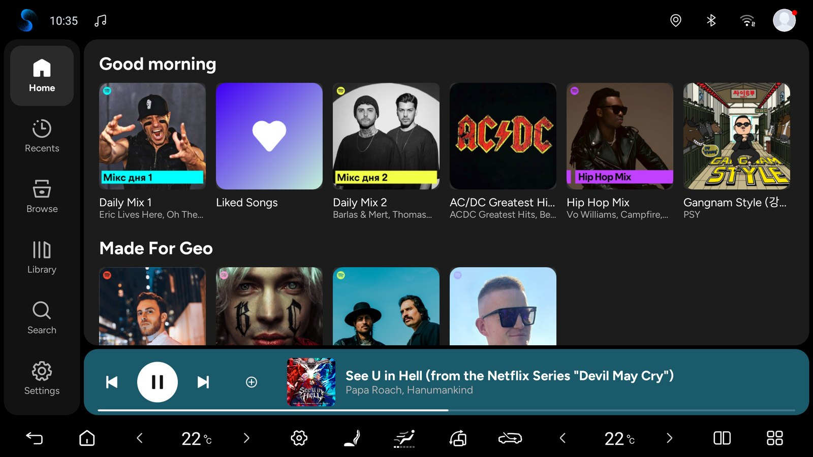
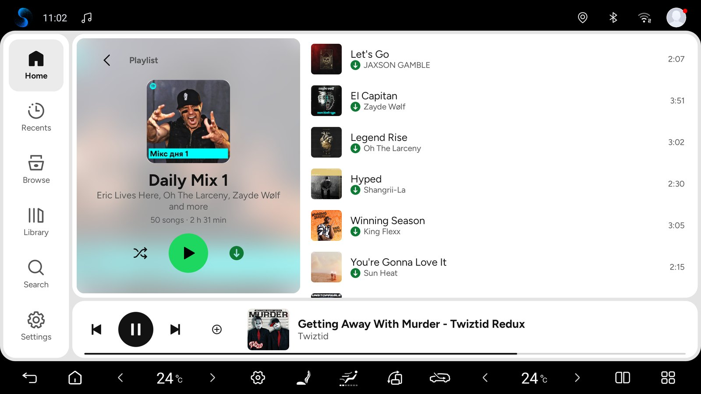
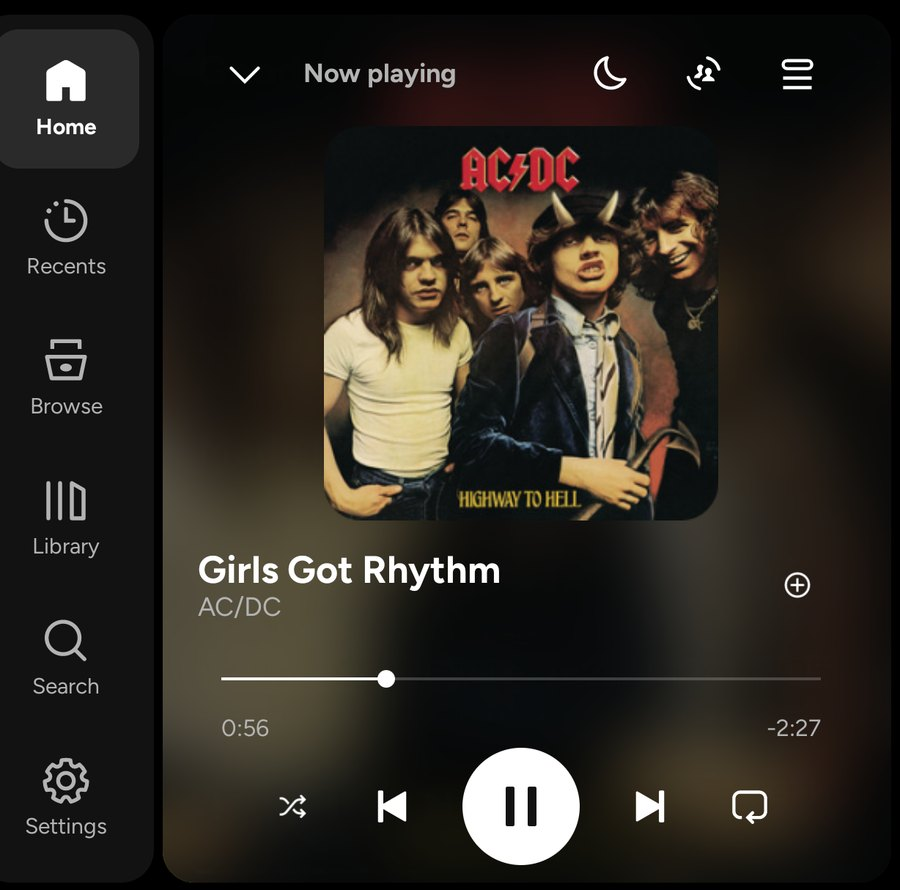

自有界面
首页、最近、浏览、音乐库和搜索，以及歌单、专辑、艺人和播客页面，按钮大而易点。导航在侧边，竖屏时在底部。
适用于 Android 车机的实验性 Spotify Automotive 播放器，拥有为汽车设计的自有界面：一个 APK、一个图标和标准的 Spotify 登录。免费——切勿付费。
下载 test.18 APK ↗


首页、最近、浏览、音乐库和搜索，以及歌单、专辑、艺人和播客页面，按钮大而易点。导航在侧边，竖屏时在底部。
在 Waze 的音频面板中选择 Spotify，并在 Waze 中接受一次“Connect to Spotify”。之后 Waze 会显示正在播放的内容并控制播放，打开首页、最近、浏览和音乐库；曲目旁有爱心，在 Spotify 允许时还有随机播放。
页面加载时不再显示“正在加载…”，而是显示与内容形状相同、带微光的占位块；随后卡片和列表依次浮现，封面淡入，页面从侧面滑入，标签页之间淡入淡出切换。导航栏的选中标记会滑到你点按的标签。
播放器、迷你播放器和页面顶部都以模糊的封面为背景。控制按钮位于驾驶员一侧；向上滑动迷你播放器即可打开播放器，在迷你播放器或播放器上左右滑动即可切换曲目。迷你播放器会显示时间，并提供随机播放、重复和设备按钮；导航栏也会收起全屏播放器。
车机设置 → 方向盘：自动、左或右。在 BYD 上，“自动”会向车辆查询驾驶座位置；右舵时，导航、控制按钮和麦克风移到右侧。
可以看到音乐在哪里播放并随时切换：播放器和迷你播放器中都有设备按钮——本车、手机、电脑或使用同一账号的音箱。当其他设备在播放时，Spotify 会以绿色显示。
两个 Spotify 小组件，适用于可以添加小组件的启动器：根据大小显示为横条、方块或带封面、时间和控制按钮的大播放器，支持白天和夜间配色。比亚迪原厂启动器只显示比亚迪自己的小组件。
其他应用打开的 Spotify 链接（spotify:、open.spotify.com、spotify.link）会显示歌单、专辑或艺人，或直接播放歌曲。启动器、听歌记录应用和抬头显示应用可以看到正在播放的内容（可在设置中关闭）。
播放队列在播放器上方打开：播放或移除曲目、开启歌曲或艺人电台、打开 Jam。月亮按钮可在 15–60 分钟后或本曲结束时暂停音乐。
下载歌单和专辑以便离线收听（Spotify Premium）。绿色箭头标记已下载的歌曲，下载时页面会统计数量。实验功能。
此应用免费。如果有人向您出售，您被误导了——请要求退款。请仅从本页下载。这是非官方应用，并非 Spotify 或 BYD 出品。被修改的副本会提示这一点，且无法获得更新。
界面像其他应用一样延伸到导航旁半个屏幕的边缘，并适配竖屏；竖屏分屏时播放器仍保留大封面。横屏时键盘覆盖在界面上方，不会挤压界面。
输入时即显示结果，分组方式与 Spotify 相同，并保留最近搜索。车机支持语音识别时会出现麦克风；在 BYD DiLink 上请使用方向盘上的语音按钮或键盘上的麦克风。
界面和音乐服务在同一个已安装的应用包内运行——不再包含 BYD 播放器的任何代码，体积减小 10 MB。
点击 LOG IN，用手机扫描二维码，然后确认登录 Spotify。
打开主机设置 → 账号，可通过二维码添加账号、重命名已保存的账号或切换账号。
固定设备 ID、安全移除旧账号以及每次启动一次的自动恢复，让 Spotify 保持登录。主机设置中显示最近一次登录事件。
Spotify 每天检查新的测试版本，并在你确认 Android 的“更新”窗口后安装。开关和按钮位于主机设置 → 更新。早于 test.9 的版本需手动更新一次。
车机设置提供两个独立选项：在启动或长时间休眠后恢复播放，以及在新启动 Spotify 时播放。应用会等待播放器准备就绪；暂停会取消自动重试。还可以在车机启动时在后台启动 Spotify（比亚迪除外：熄火会停止应用）。
Spotify 会随播放启动和停止车辆原生灯光律动。请在车辆氛围灯设置中开启“音乐律动”；颜色和效果由车辆控制。
Preview and send a technical report, track or cancel pending reports, and export a ZIP. Automatic reporting is optional after the first-use notice.
Open Head unit settings → Support. Send diagnostics lets you preview approved technical data before sending. Reports go to our shared server and a limited summary may appear in this project’s PUBLIC GitHub Issues. Automatically send diagnostics is selected on the first-use notice and starts only after Continue; you can turn it off in Support. Automatic reports cover measured integration failures only, at most one new report per day. Manual sending, pending status/cancellation and ZIP export remain available with automatic sending off. Reports exclude account data, song/playlist names, location and screenshots. Technical metadata is not a guarantee of anonymity.
Headunit-test.18 会在 Waze 的音频面板中显示 Spotify：当前曲目、播放控制、爱心、在 Spotify 允许时的随机播放，以及首页、最近、浏览和音乐库。自 test.17 起，加载和切换更流畅：不再显示“正在加载…”，而是显示与内容形状相同的占位块，内容依次浮现，封面淡入，页面从侧面滑入，标签页淡入淡出切换。自 test.16 起，它会显示音乐在哪里播放，并可在本车和你的其他设备之间切换（Spotify Connect）；迷你播放器提供时间、随机播放、重复和设备按钮，屏幕四周有一圈细边框，导航栏会收起全屏播放器。test.14 为可以添加小组件的启动器加入了桌面小组件（按大小提供五种布局，支持白天和夜间），可以打开其他应用中的 Spotify 链接，会告诉其他应用正在播放什么，并可在车机启动时在后台启动 Spotify（比亚迪除外）。它由完整参考构建生成。发布审计为 56 PASS / 0 FAIL；152 项更新、39 项登录、14 项面板访问、13 项 Connect 消息、66 项 App Remote 和 19 项播放启动检查通过，签名证书与 test.17 相同。在 Android 9 和 13 模拟器上，test.18 可作为更新安装在 test.17 之上，并在无崩溃的情况下检查更新；登录和“账号”流程在 Android 13 上通过。小组件已在 Android 11 和 12 模拟器的原生启动器中检查；链接在其中打开了歌单、专辑和艺人。相同代码的版本正在比亚迪唐（DiLink 5，Android 12）上运行，并在车上的 Waze for BYD 5.22 音频面板中打开了 Spotify，曲目旁有爱心，Liked Songs 中有随机播放，播放器中的爱心也可用；test.17 时在车上验证了动效，test.16 时验证了把音乐转到笔记本电脑再转回来。
实验版 headunit-test.18。 Waze 中的 Spotify 仅在一辆车上用 Waze for BYD 5.22 验证过；Waze 会单独征求一次同意，且不为它显示重复按钮。转移音乐仅在笔记本电脑上验证过。小组件目前只显示过虚构的曲目，比亚迪原厂启动器也无法显示它们。通过链接播放歌曲以及真正读取“正在播放”的应用尚未验证。右舵尚未在右舵车上见过；DiLink 5.1 / Android 13 和其他车机尚未验证；阿拉伯语只在模拟器上检查过。面板区块只会出现在支持它的应用中。Spotify 为其 Automotive 客户端关闭了下载；本版本开启了客户端支持，因此 Spotify 可能会改变下载的工作方式。
Android 9+（API 28）。比亚迪律动已在 DiLink 5 / Android 12 上验证；DiLink 5.1 / Android 13 和其他固件尚未验证。已实现 AAOS 和 GENERIC 配置；其他品牌真实车机及 AAOS 尚未验证。
当前测试版本的 SHA-256：
114962299a487d7459481567a196f969fe3d76a67e720dca483fce344863467d我们的 Java 代码——界面、集成、补丁和构建脚本、审核及模拟器测试——都在仓库中，遵循 NOTICE.md 的条款（免费、不得出售、保留免费声明）。专有的 Spotify 后端是本地构建输入。自 test.13 起，APK 不再包含 BYD (Vivid) 播放器的任何部分。
Java / build · 已完成的测试 · NOTICE